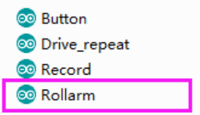
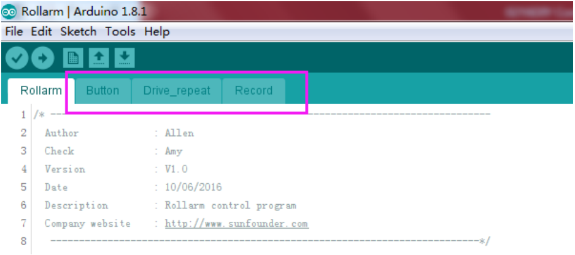
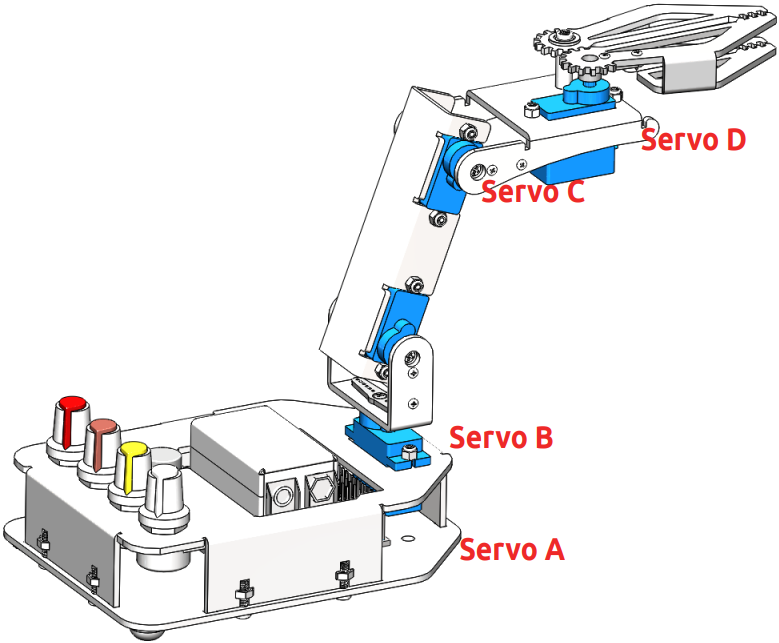
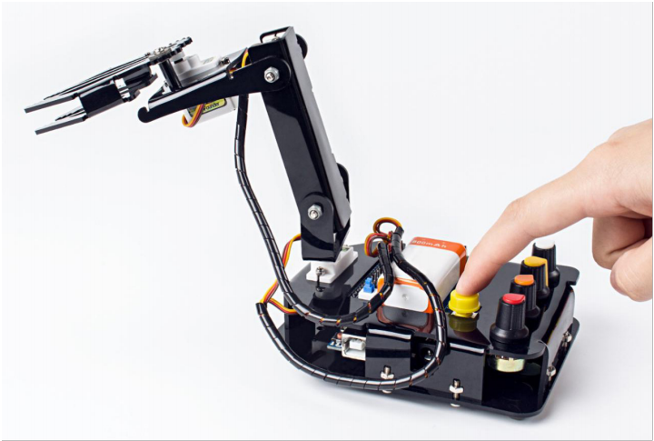

Manual Control¶
Step 1: Run the Rollarm.ino code under the path DIY Control Robot Arm kit for Arduino-RollarmArduino CodeRollarm. There are four code files in Rollarm, Rollarm.ino is the main program, when the others are subprograms.
When you open the main program, the subprograms will be opened automatically：
Step 2: Select the corresponding board and port, then click Upload.
Step 3: After the code upload, turn the power switch on, then we can try to control the Rollarm.
Step 4: Rotate the four potentiometer buttons to try the controlled servo and direction:
White potentiometer to control the Servo D, the yellow to control Servo C, the orange to control Servo B, and the red one to control Servo A.
Record behavior¶
With the handle, the Rollarm can record its behaviors:
Rotate one potentiometer to control one servo to the desired position, and press the yellow button shortly to let the control board record this step. Record the rest steps in this way.
When all the steps are done, press the yellow button for a while (3s), it will repeat the recorded steps (Rollarm can record at most 100 steps because of the control board’s memory limit.)
Thus we can make it automatically carry blocks continuously:
Code Explanation¶
The program includes three parts: rotating the potentiometers to control the Rollarm, pressing the button slightly for less than one second to record Rollarm’s behaviors and pressing the button for a relatively longer time to make Rollarm repeat the recorded steps.
There are four potentiometers to control the arms. The 4 servos from top to bottom are connected to port 4-7 respectively of the expansion board, and the 4 potentiometers control the ports accordingly. In other words, spin the white potentiometer to control the uppermost servo, the yellow to control the next servo below, the orange to control the next servo, and the red one to control the bottom servo.
Since the Rollarm has four servos acting as the moving joint, we need to include a header file for driving the servos and define them.
//Create servo object to control a servo.
#include <Servo.h>
Servo Servo_0;
Servo Servo_1;
Servo Servo_2;
Servo Servo_3;
After defining the function of driving the servos, we need to read the AD value of the potentiometers and convert it into the rotating angle of the servo since the servos are controlled by rotating the potentiometers.
//Read the values ot the potentiometers.
void ReadPot()
{
SensVal[0] = 0;
SensVal[1] = 0;
SensVal[2] = 0;
SensVal[3] = 0;
SensVal[0] = analogRead(A0);
SensVal[1] = analogRead(A1);
SensVal[2] = analogRead(A2);
SensVal[3] = analogRead(A3);
}
//The value of the potentiometer is matched to the angle value.
void Mapping0()
{
SensVal[0] = map(SensVal[0], 0, 1023, 10, 170);
SensVal[1] = map(SensVal[1], 0, 1023, 10, 170);
SensVal[2] = map(SensVal[2], 0, 1023, 10, 170);
SensVal[3] = map(SensVal[3], 0, 1023, 100, 180);
}
After compiling the program, we need to make Rollarm remember the steps, which is done through pressing the button.
//Calculate the time the button pressed
void Button()
{
if (digitalRead(3) == 0)
{
delay(10);
if (digitalRead(3) == 0)
{
KeyValue = 0;
while (!digitalRead(3))
{
KeyValue++;
delay(100);
}
}
}
}
We can tell which part of the code the Rollarm is performing by reading the value upon pressing the button. When the value is larger than 10, it means Rollarm is repeating the steps. When it is between 0 and 10, it means Rollarm is remembering. And when it is 0, it means Rollarm is being controlled by the potentiometers. The specific program is as follows:
//Check the button.
static int Flag = 1;
Button();
//The time of pressing the button is not long then record the action.
if ((KeyValue < 10) && (KeyValue > 0))
{
KeyValue = 0;
Record();
Mapping1();
}
//Long press the button and open the auto mode,start repeating the action.
else if (KeyValue > 10)
{
if (Flag == 1)
{
Flag = 0;
Calculate();
}
Drive_init();
delay(3000);
for (int i = 1; i < Time; i++)
{
Drive_repeat(i);
delay(500);
}
}
//Did not press the button, open the manual mode.
else
{
ReadPot();
Mapping0();
Next, we are going to call the function to write the value of the servo rotating angle. However, it is not merely about writing the values directly; the difference between two adjacent rotating values will also be written into the servos. Here we take a servo program for example.
//The first axis.
if (Dif0[n] > 0)
{
for (int j = Joint0[n - 1]; j <= Joint0[n]; j++)
{
Servo_0.write(j);
delay(10);
}
}
else
{
for (int j = Joint0[n - 1]; j >= Joint0[n]; j--)
{
Servo_0.write(j);
delay(10);
}
}